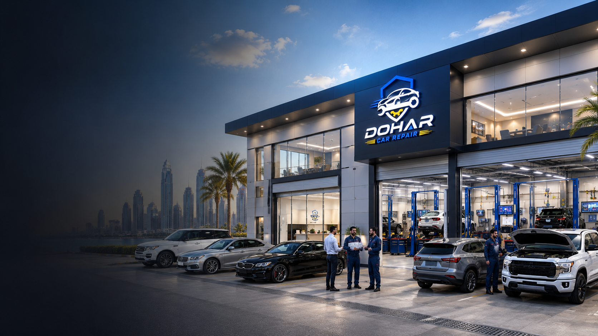
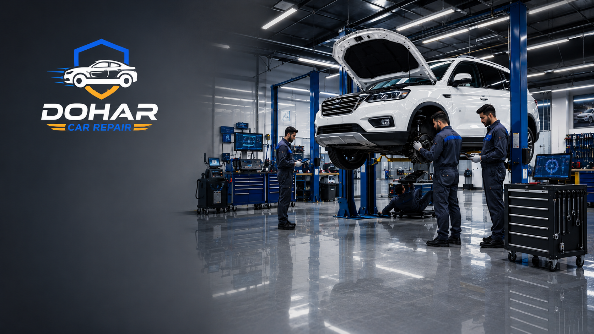

Finding the Best Car Garage Doha residents can trust is more than a search for “car garage near me.” In Qatar’s climate and traffic, the workshop you choose determines whether repairs last through summer heat, highway stops on Salwa Road, and daily congestion around Al Waab and the Corniche. This buying guide walks you through what makes a garage trustworthy, red flags to avoid, questions to ask before authorizing work, warranties, pricing transparency, multi-brand capability, emergency response, and how a full-service workshop on Street 27 in Doha stacks up — so you can choose with confidence, not pressure.

Why Choosing the Right Garage Matters in Qatar
Cars in Doha face conditions that amplify small workshop mistakes: extreme ambient heat, fine sand that contaminates fluids and brakes, stop-and-go traffic, and high summer cabin loads on the AC system. A rushed diagnosis that misses a failing belt, weak battery, or overheating thermostat can leave you stranded on the Expressway. Conversely, a careful workshop that uses quality parts and explains findings in plain language saves money over the life of the vehicle.
Dealer service centres offer brand-specific tooling, but independent multi-brand garages often deliver faster turnaround and clearer quotes for Japanese, Korean, European, and American vehicles. The goal is not the cheapest labour rate — it is the best balance of honesty, skill, warranty, and communication. That is what separates a workshop you return to from one you regret after one visit.
- Heat and wear: Incorrect oil grades, cheap coolants, or weak batteries fail faster in Qatar summers
- Safety systems: Brakes, steering, and tyres must be diagnosed correctly — shortcuts put lives at risk
- Total cost of ownership: One cheap repair that fails twice costs more than a done-right first visit
- Peace of mind: Written quotes, parts provenance, and warranty terms reduce disputes
Quick Tip
Before you book, ask whether the garage will show you worn parts, explain the root cause (not just the symptom), and put the quote and warranty in writing. Transparency is the first mark of a trusted workshop in Doha.
What to Look For in a Car Garage — Best Car Garage Doha Checklist
Use this checklist when you evaluate any auto repair workshop in Qatar. A strong candidate for the Best Car Garage Doha search will check most or all of these boxes.
Honest Pricing and Written Quotes
Trustworthy workshops estimate labour and parts before major work begins. They separate diagnosis fees from repair charges, explain optional versus mandatory items, and warn you if further issues may appear once the job starts (for example, seized bolts or hidden oil leaks). Vague “leave the car and we’ll call you” promises without a ballpark range are a warning sign.
Skilled, Accountable Mechanics
Ask who will work on your car and whether they have experience with your make. Multi-brand shops should have diagnostic scan tools that cover Toyota, Nissan, Hyundai, Kia, BMW, Mercedes, Ford, and more. Good technicians explain findings; great ones also educate you on preventive maintenance suited to Qatar roads.
Warranty on Parts and Labour
A warranty — even a limited one — shows confidence. Clarify duration (for example, 3–12 months or kilometre limits), whether parts and labour are covered, and what voids coverage. Reputable garages stand behind pad and rotor jobs, battery installs, AC repairs, and major mechanical work with clear terms.
Quality Parts — Not Just the Cheapest Option
OEM-equivalent or reputable aftermarket brands usually outperform no-name parts in heat. Ask which brand of oil, filters, brake pads, batteries, and coolant they stock. A garage that only pushes the cheapest option without discussion is optimising for your next visit, not your car’s longevity.
Facility Standards and Location
Look for organised bays, proper lifts, fluid disposal habits, and easy road access. Dohar Car Repair serves customers from Street 27, Doha — a practical location for drop-off, pickup, and emergency coordination across the city. Cleanliness and organised tooling often correlate with disciplined process.
Communication and Language
You should receive updates when findings change, when parts arrive, and when the car is ready. WhatsApp and phone access matter in Doha’s busy schedules. If nobody returns calls, service quality usually suffers in parallel.

Red Flags & Common Causes of Bad Service Experiences
Many frustrating garage experiences share the same root causes. Recognising them helps you walk away early.
- Upselling without evidence: Being told you need rotors, a timing belt, or a full AC recharge without photos, measurements, or scan results
- Bait-and-switch pricing: A low “diagnostic” that mysteriously becomes a huge invoice with no approval trail
- No written scope: Work performed that you never authorised
- Returned parts withheld: Refusing to show old pads, filters, or batteries after replacement
- Recurring same symptom: The same noise or warning light returns within days — often a rushed guess, not a diagnosis
- Pressure tactics: “Drive one more day and the engine will blow” without scan data or fluid analysis
Common causes include undertrained staff, incentives to sell parts volume, lack of diagnostic tools, and workshops that treat every visit as a one-off instead of a relationship. Pair these red flags with the warning signs in the next section before you hand over keys.
Warning Signs of an Unreliable Workshop
Chaos on the Floor
Tools scattered, cars overlapping randomly, no intake paperwork — process problems often become bill and timeline problems.
No Diagnostic Capability
Modern cars need OBD scanning, live data, and sometimes bi-directional control. A workshop that only “listens and guesses” will miss intermittent electrical, sensor, and emissions faults.
Cash-Only Ambiguity
Many shops take cash; that alone is fine. What matters is whether you still receive a receipt, itemised invoice, and warranty note. Opaque payments without paperwork complicate disputes and insurance claims.
Unwillingness to Explain
If a mechanic cannot describe the problem in simple language or becomes defensive when you ask questions, trust elsewhere. Respectful education is a hallmark of professional service.
No Multi-Brand Confidence
If your vehicle is “too complicated” or they refuse European electronics without trying proper diagnostics, you may need a better-equipped garage — especially for AC compressors, ABS modules, and engine management.
"A trusted garage does not fear questions. If a workshop cannot show you the wear, explain the cause, and put the price and warranty in writing, keep looking — your car deserves better than guesswork."
How Professionals Should Handle Your Repair
Use this evaluation process as a steps-list when comparing workshops. A professional repair flow should look like this from intake to handover.
- Clear intake: They record your symptoms, dashboard lights, recent work, fuel type, and driving patterns (city vs highway, summer AC use).
- Inspection and diagnosis: Visual inspection plus scanning where needed — not parts replacement as the first step.
- Evidence-based recommendation: Photos, measurements (pad thickness, battery voltage, AC pressures), and explanation of safety-critical vs optional items.
- Written quote and approval: Labour, parts brand options, timeline, and warranty before major work.
- Quality execution: Correct torque, fluid specs for Qatar heat, road test, and confirmation that the original symptom is gone.
- Handover and aftercare: Invoice, warranty card, returned old parts if requested, and maintenance tips for your next service interval.
If a garage skips diagnosis and jumps straight to replacing expensive assemblies, ask for a second opinion. Parallel diagnostics are normal for serious engine repair and electrical faults.
Questions Worth Asking
What is included in the quote? Which parts brand will you use? How long is the warranty? Will you show me the old parts? Do you road-test after repair? Can you handle my make with proper scan tools? Is emergency or same-day help available?
Services a Full Garage Should Offer
A complete auto workshop in Doha should cover more than oil changes. When you compare shops, map their menu against real needs:
- General repair & maintenance: Servicing, filters, diagnostics, and routine care — see our guide to car repair service in Doha
- Engine work: Overheating, misfires, oil leaks, sensors — details in engine repair Doha
- Brake systems: Pads, rotors, fluid, ABS — covered in brake repair in Qatar
- Car AC: Gas recharge, compressor, condenser, cabin cooling — see car AC repair Doha
- Battery & electrical: Testing, replacement, charging system diagnosis suited to heat soak
- Oil & fluids: Correct viscosity and intervals for Qatar summers, coolant, brake fluid, transmission service
- Accident & damage paths: Repair assessment or assistance when selling damaged vehicles — read buy accident car Qatar
- Emergency support: Breakdown help, jump starts, and priority slots when you cannot safely drive
Specialist-only shops can be excellent for one system; a trusted full garage becomes your long-term partner across all of the above.
Maintenance Relationship Tips
The best outcomes come from treating one workshop as your “home garage” rather than rotating every visit based on the lowest WhatsApp quote.
- Keep a shared history of invoices, scan codes, and tyre/brake measurements
- Book seasonal checks before peak summer (AC, coolant, battery) and after dusty trips
- Tell your mechanic about new noises early — intermittent issues are harder once they vanish
- Follow oil and filter intervals suited to short trips and heat, not only sticker kilometres
- Ask for annual safety inspections covering brakes, tyres, lights, and undercarriage
A garage that knows your car’s history spots patterns faster: recurring battery drain, seeping coolant, or pad wear rates that signal caliper issues.
Mistakes When Choosing a Garage
- Choosing only on price: The lowest quote often uses lesser parts or incomplete labour
- Ignoring location and access: A distant “cheap” shop costs time, taxis, and missed follow-ups
- Authorising everything orally: Always confirm scope in writing or chat message
- Skipping brand fit: Some jobs need model-specific know-how (turbo diesels, dual clutches, complex AC)
- Never asking about warranty: You discover the gap only when something fails
- Panic decisions after breakdowns: Have a trusted number saved before emergencies happen
- Assuming dealers are always best: Independents with good tooling can match quality at clearer prices for many jobs
Typical Repair Cost Ranges in Qatar
Prices vary by make, part brand, and labour complexity. Use these Doha-oriented ranges as conversation starters — always request an itemised quote for your vehicle.
- Full service / oil & filters: 150–450 QAR depending on oil grade and vehicle
- Battery replacement: 250–700 QAR including testing
- Brake pads (per axle): 300–700 QAR parts and labour
- Brake fluid flush: 150–250 QAR
- AC gas recharge / basic diagnostics: 150–400 QAR (repairs may add cost)
- AC compressor replacement: 1,200–3,500+ QAR depending on vehicle
- Engine diagnostics / sensor work: 100–500 QAR diagnosis; parts extra
- Major engine or cooling repairs: often 1,500–8,000+ QAR by scope
A transparent garage explains why a European model costs more to service than a compact Japanese car, and offers tiered parts options when safe to do so.
Location Matters
Dohar Car Repair is based on Street 27, Doha, Qatar — convenient for drop-offs across the city and quick coordination for emergency repair. Call 0097472223959 or WhatsApp for quotes and appointments.
Benefits of a Trusted Workshop
Once you settle on a workshop that earns trust, the benefits compound:
- Fewer comebacks: Correct diagnosis and quality parts reduce repeat visits
- Predictable budgets: Honest quotes and planned maintenance beat surprise highway towing bills
- Safer driving: Proper brake, tyre, and steering work protects your family on Doha roads
- Resale value: Documented service history helps when you sell or trade
- Priority help: Loyal customers often get faster emergency slots
- Clear warranties: Written coverage when a rare failure occurs
Why Choose Dohar Car Repair
Dohar Car Repair ranks among Doha’s trusted multi-brand workshops because we combine experienced mechanics, honest quotes, quality workmanship, and clear communication — not sales scripts. We handle general car repair, engine issues, brakes, AC, battery and oil service, and paths related to accident or damaged cars. Our team focuses on root-cause repair, Qatar-appropriate parts and fluids, and warranties you can understand.
Whether you searched for a car garage near me, the best mechanic in Doha Qatar, or a trusted car workshop Qatar drivers recommend, start with a transparent inspection. Visit us on Street 27, call 0097472223959, or message us on WhatsApp — we will explain what your car needs and what it does not.
FAQ — Choosing a Car Garage in Doha
How do I find the best car garage in Doha?
Compare written quotes, warranties, diagnostic capability, reviews, and how clearly the team explains issues. Visit the facility once, ask to see sample invoices or warranties, and prefer workshops that show worn parts instead of selling replacements only.
Should I use a dealer or an independent garage?
Dealers excel for warranty and brand-specific campaigns. Independent multi-brand garages often win on speed, clarity, and value for out-of-warranty vehicles — if they have proper scan tools and experienced technicians.
What warranty should I expect?
Ask for written terms covering parts and labour. Durations vary by job; responsible shops honour reasonable guarantee windows when workmanship or parts fail under normal use.
Do you offer emergency repair?
Yes — contact Dohar Car Repair by phone or WhatsApp for urgent issues such as overheating, brake failure symptoms, no-start conditions, or AC failure in extreme heat. We prioritise safety-critical cases where possible.
Where are you located?
Street 27, Doha, Qatar. See maps via our contact page for directions and hours.
Can you service any car brand?
We work across common makes on Qatar’s roads and use multi-brand diagnostics. Share your make, model, and year when booking so we can confirm tooling and parts availability.
Conclusion
Choosing the Best Car Garage Doha drivers can rely on comes down to trust markers: transparent pricing, skilled diagnostics, quality parts, real warranties, multi-brand capability, and responsive communication — including emergency help when Qatar’s heat or traffic leaves you stranded. Use the checklists and red flags in this guide, ask the hard questions before you approve work, and build a maintenance relationship with a workshop that treats your car like a long-term responsibility, not a one-time invoice.
Ready for an honest inspection? Dohar Car Repair on Street 27 is here to help. Call 0097472223959, WhatsApp us, or visit our contact page to book your next service with clear quotes and quality workmanship.
Need a Trusted Garage Today?
Visit Dohar Car Repair for experienced mechanics, honest quotes, and quality workmanship in Doha. Call 0097472223959 or WhatsApp us now — Street 27, Doha, Qatar.